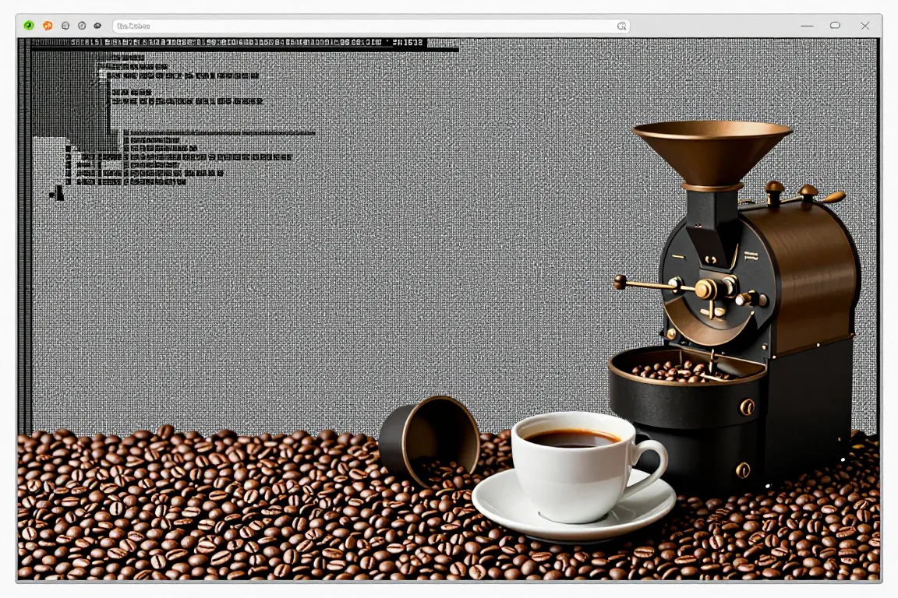

internet · 1994–2001 · also: Browser art, net.art, Default HTML art
Art made inside the browser from raw HTML: default grey ground, blue links, Times text, broken frames and visible code. The net.art artists of the 1990s used the window as the canvas.

Core thesis
The browser is the material: show its defaults, its errors and its source as the work itself.
Design principles
Keep the browser defaults: Times text at 16px, blue links (#0000EE), visited links (#551A8B) and a margin of 8px.
Choose one ground: white (#FFFFFF), default grey (#C0C0C0) or black with green text (#00FF00).
Split the window with nested frames at 1px borders, and let one frame show an error or the raw source.
Set text as plain lines of 60 to 80 characters; use no images, or use 1 stretched GIF.
Make links the only navigation; name them with single words or with the URL itself.
Show the code: print a block of HTML, a status line or an error message as visible content.
Let colour and size glitch: one line in 72px bold red (#FF0000) among 16px black text.